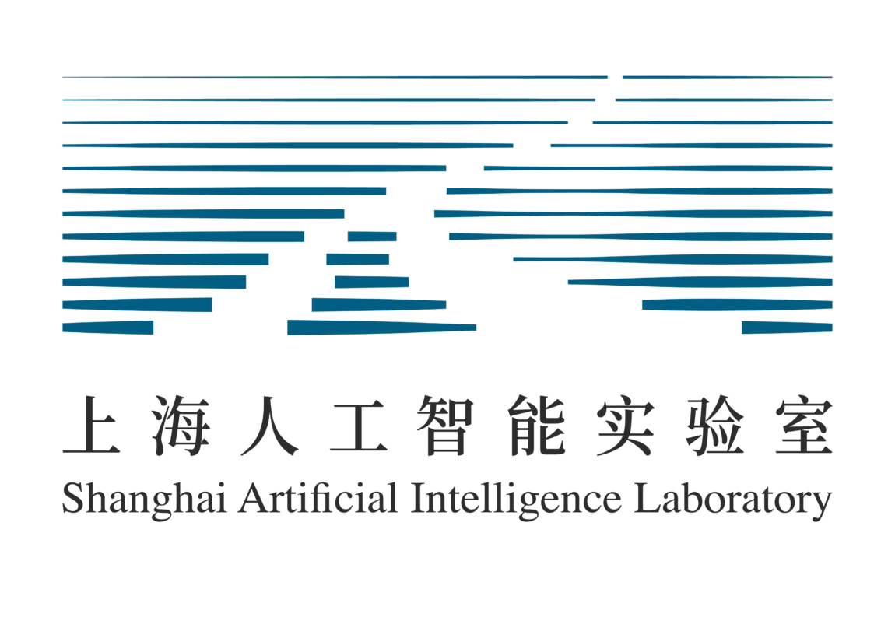

Jiaqi Wei
Ph.D. Student, Zhejiang University
Hi there! I'm Jiaqi Wei, a Ph.D. student at Zhejiang University, where I conduct my research under the excellent guidance of Prof. Siqi Sun and Prof. Wanli Ouyang. Before beginning my doctoral studies here, I completed my B.E. degree in Computer Science at Shandong University (GPA: 93.83/100.00; Rank 1st).
My core research interests lie at the intersection of LLM, Agent, and RAG. Feel free to reach out if you'd like to discuss potential collaborations or share ideas.


News
1 paper has been accepted by ICML 2026.
1 paper has been accepted by CVPR 2026.
1 paper has been accepted by EMNLP 2025 NewSumm Workshop.
3 papers have been accepted by NeurIPS 2025.
Our survey about "Agentic Science: Autonomous Scientific Discovery" was released. Thanks to all collaborators!
1 paper has been accepted by ACL 2025.
2 papers have been accepted by ICML 2025.
1 paper has been accepted by Nature Communications.
Internships

Selected Publications
(Co-) First Author Publications; † means equal contribution.
- When to Think, When to Speak: Learning Disclosure Policies for Large Language Model Reasoning
- Retrieval is Not Enough: Enhancing RAG through Test-Time Critique and Optimization
- From AI for Science to Agentic Science: A Survey on Autonomous Scientific Discovery
- Curriculum Learning for Biological Sequence Prediction: The Case of De Novo Peptide Sequencing
- Universal Biological Sequence Reranking for Improved De Novo Peptide Sequencing
- Bidirectional Representations Augmented Autoregressive Biological Sequence Generation
- MassNet: billion-scale AI-friendly mass spectral corpus enables robust de novo peptide sequencing
- TimeSeriesScientist: A General-Purpose AI Agent for Time Series Analysis
- FORESTLLM: Large Language Models Make Random Forest Great on Few-shot Tabular Learning
- Reflection Pretraining Enables Token-Level Self-Correction in Biological Sequence Models
Co-Author Publications
- Why Prompt Design Matters and Works: A Complexity Analysis of Prompt Search Space in LLMs
- PrimeNovo: an accurate and efficient non-autoregressive deep learning model for de novo peptide sequencing
- Scientists' First Exam: Probing Cognitive Abilities of MLLM via Perception, Understanding, and Reasoning
- PosterGen: Aesthetic-Aware Paper-to-Poster Generation via Multi-Agent LLMs
Honors & Awards
- 2025, Outstanding Graduate Students of ZJU.
- 2024, Outstanding Graduate of Shandong Province.
- 2024, Outstanding Graduate of Shandong University.
- 2023, Merit Student of Shandong University.
- 2023, National Scholarship.
- 2022, National Scholarship.
- 2021-2024, 1st Class Excellent Student Scholarships in SDU * 3.